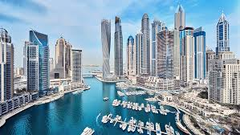
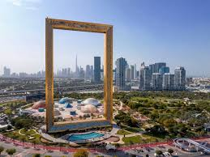

Burj Khalifa is the tallest building in the world and one of the most iconic landmarks in Dubai.
Standing at an
incredible 828 meters, this architectural masterpiece offers breathtaking views of the city, desert,
and ocean from
its famous observation decks. Visitors can experience high-speed elevators, stunning skyline
panoramas, and the
spectacular Dubai Fountain show right below the tower. Whether you visit during the day or at sunset
when the city
lights begin to glow, the Burj Khalifa provides a once-in-a-lifetime experience that every traveler
to Dubai should
see.
Dubai Marina

Dubai Marina is a must-visit destination for its iconic skyline, featuring a 7-kilometer scenic
promenade (Marina
Walk), high-end dining at Pier 7, and the 114-store Dubai Marina Mall. It offers world-class
experiences, including
yacht tours, skydiving, and easy access to JBR Beach, making it a vibrant hub for leisure and
luxury.
Dubai Frame

The Dubai Frame is a 150-meter-tall, 93-meter-wide structure in Zabeel Park that offers a unique,
panoramic
perspective of the city's evolution by framing "Old Dubai" to the north and "New Dubai" to the
south. It is a
must-visit for its breathtaking views, immersive museum, thrilling glass floor, and award-winning
design.